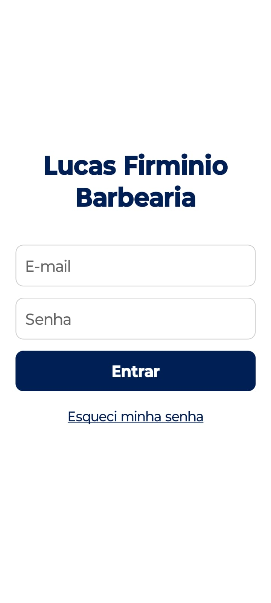
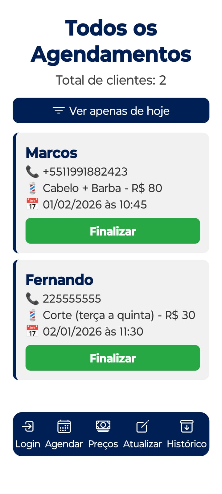

📸 Screenshots



🚀 Funcionalidades
- Cadastro e login de clientes
- Agendamento de serviços (barba, cabelo, etc.)
- Alteração de preço em tempo real
- Histórico de agendamentos com opção de exclusão
- Visualização de preços atualizados no app do cliente
- Conexão com Firebase para dados em tempo real
🛠️ Tecnologias
- React Native
- Expo
- Firebase (Auth, Firestore, Realtime Database)
🎯 Portfólio
Este projeto serve como demonstração prática de um app completo de agendamento de barbearia,
integrando backend em tempo real e funcionalidades de usuário.